Nastia Honcharenko
Graphic Designer
App Design, Branding Identity
Kharkiv, Ukraine, 2024
UI/UX class, STEP IT Academy
Pearlial was created as a counterweight for the most used social media. Instagram, TikTok etc. fuel your quick dopamine rush and contribute to short attention span.
Unlike them, Pearlial promotes to the public more useful materials: articles and posts on various topics, thought-provoking ideas, and useful videos.

Perlial, i.e. pearl. Pearls are formed from grains of sand, layer by layer. Similarly, this social network will form and grow with the build-up of ideas, interesting articles and materials.
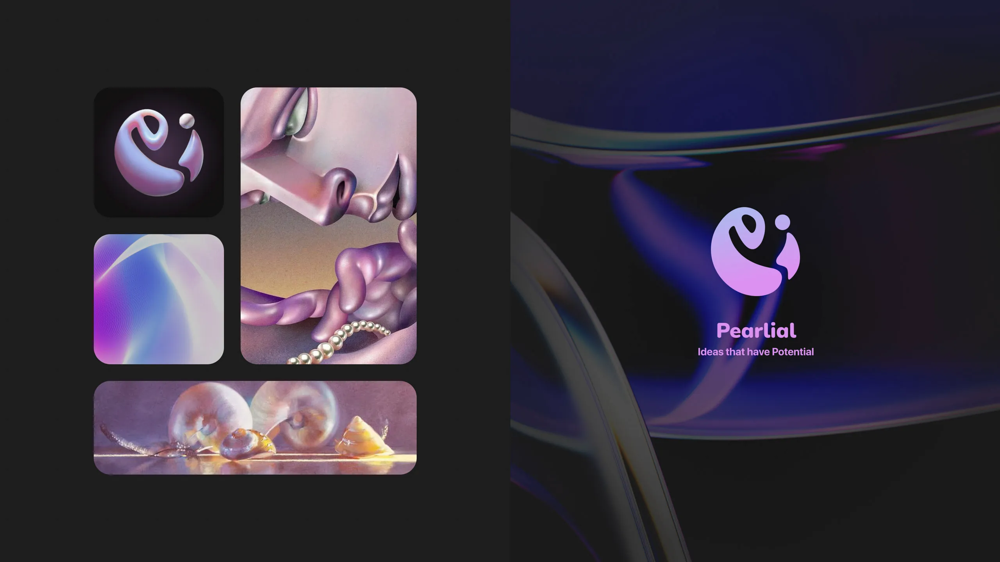
I wanted the visual identity to feel light and calm. Soft pearl blues transition into lilac, creating an atmospheric gradient that gives the otherwise minimal system a sense of movement.
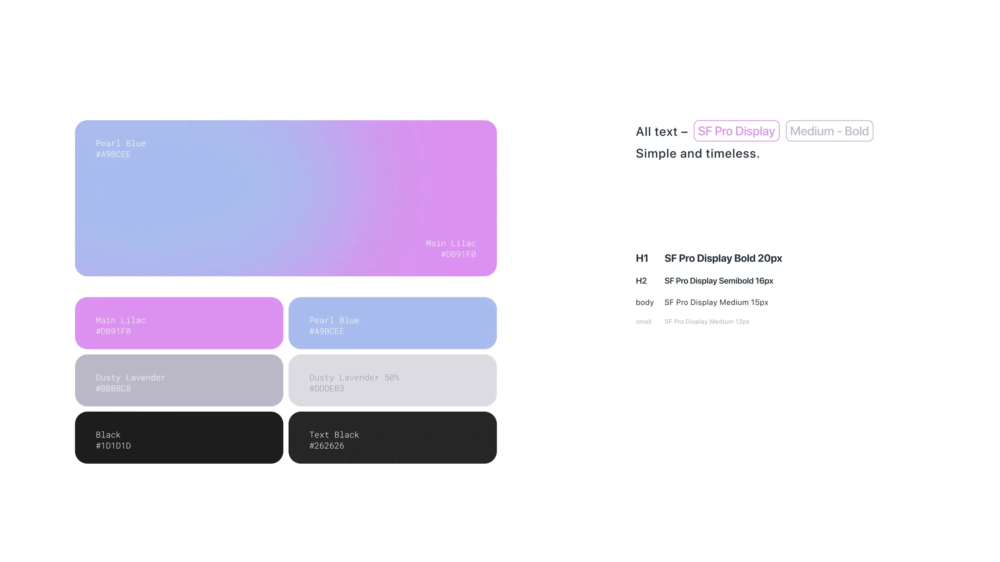
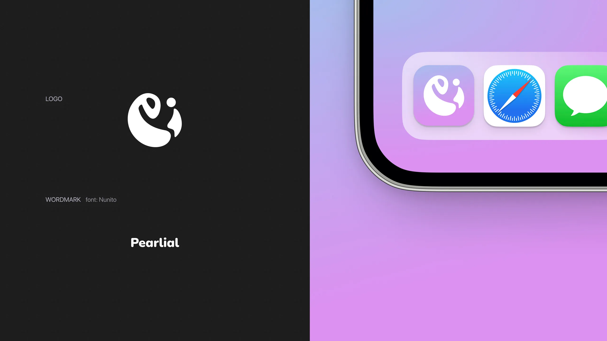
Pearlial stays similar to other social media in terms of its structure, but the biggest difference is the main types of content. In Pearlial, they are text posts, videos, and articles. You can see them on the bottom bar.
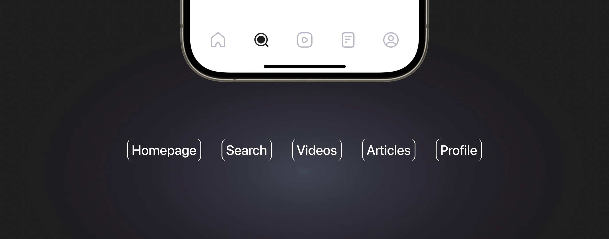
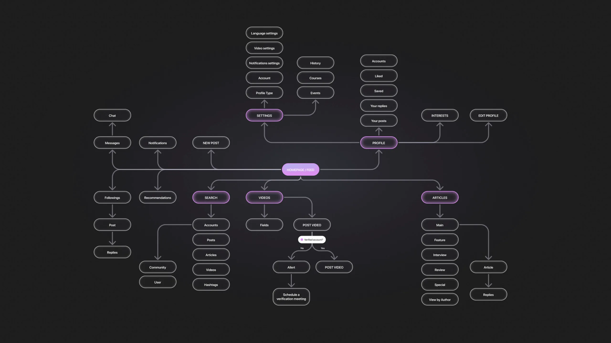
A distinct feature of Pearlial is the article section. It’s a kind of magazine inside of the app. For a comfortable reading mode, all the main interaction is limited to the panel above the bottom bar.
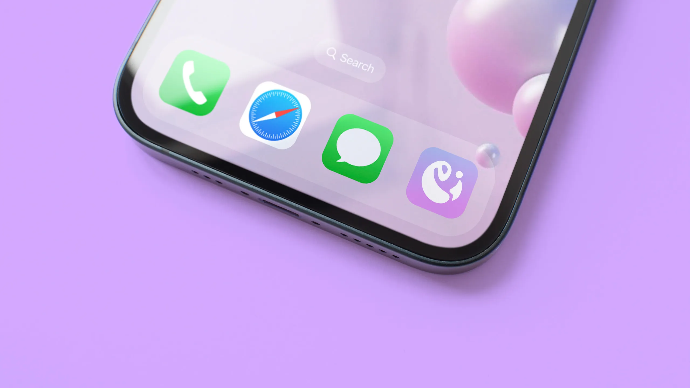
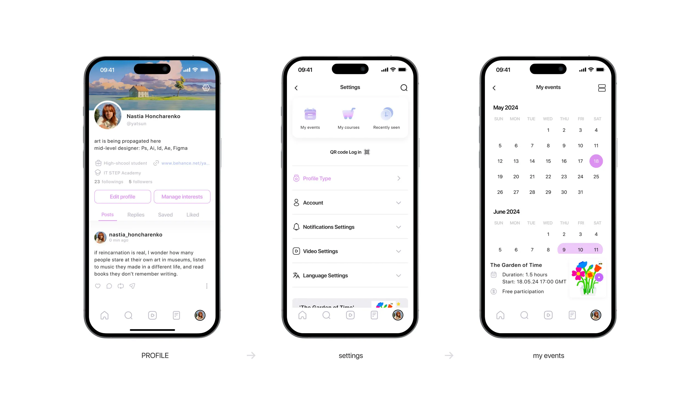
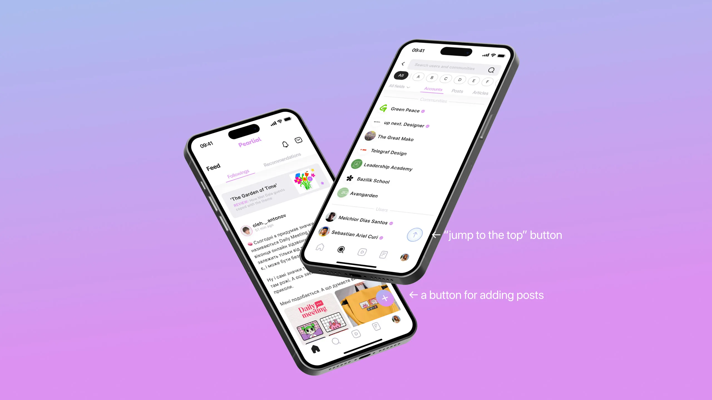
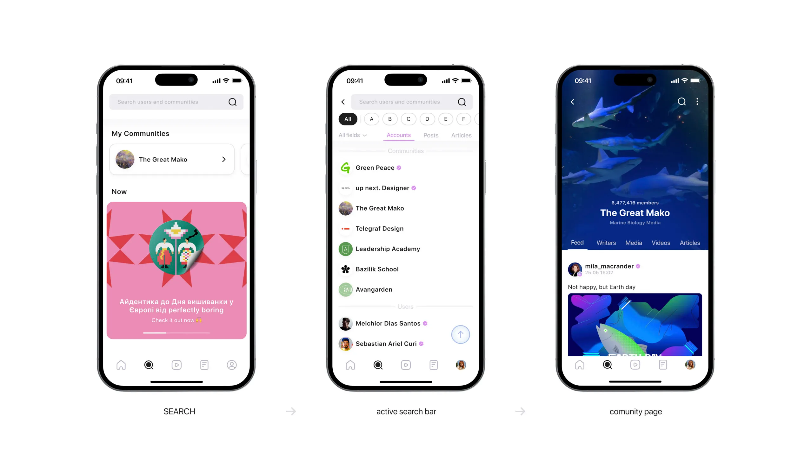
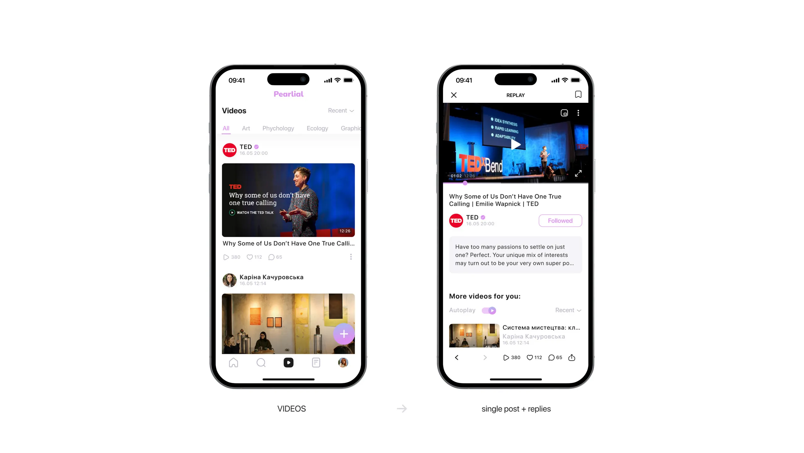
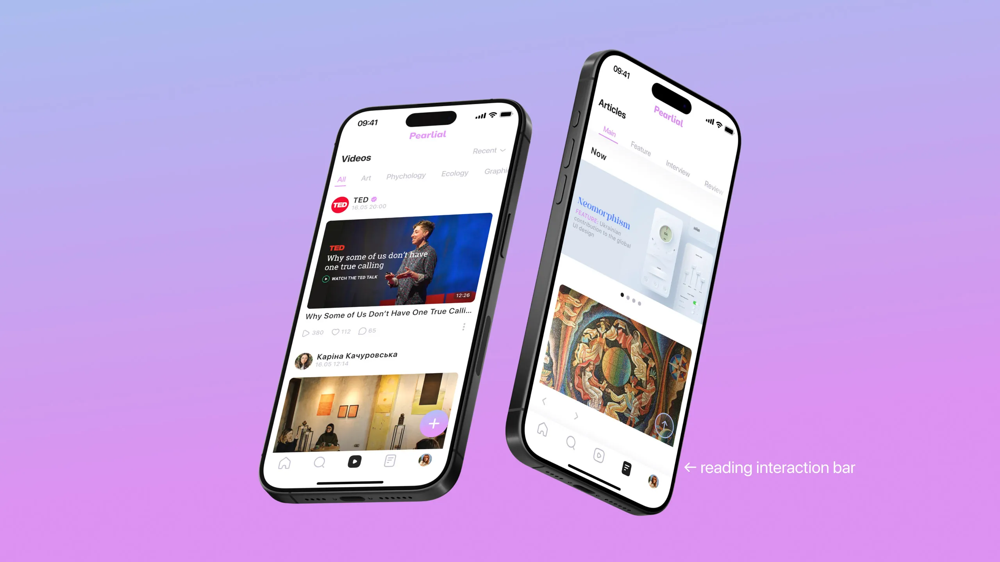
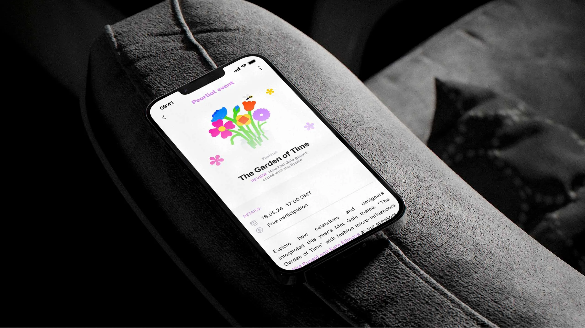
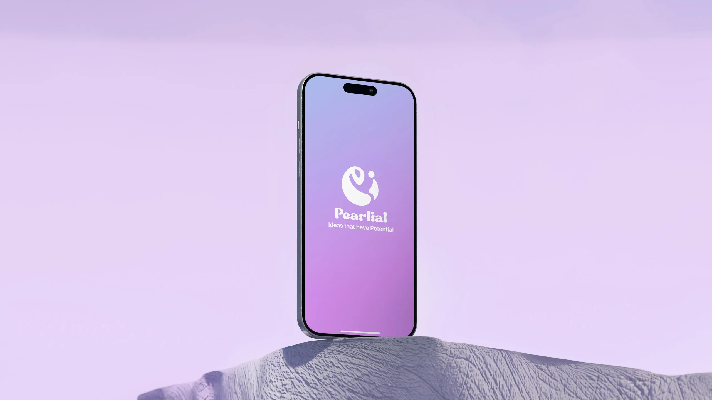